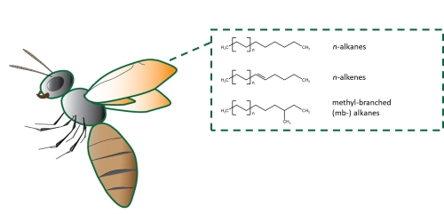
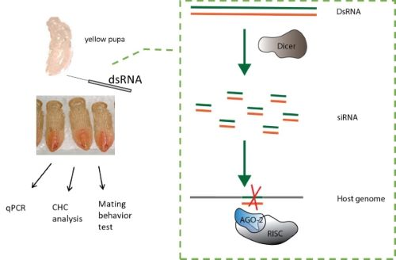
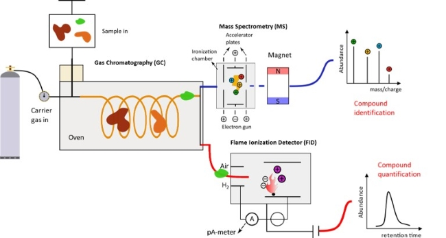

Weizhao Sun 孙伟钊
PhD student
Molecular Evolution and Sociobiology group (Prof.Juergen Gadau)University of Muenster, Germany
weizhao.sun@uni-muenster.de
Education
2013/09 - 2017/06 Bacholer of Agricutural Science, Bacholer of English (second major)
Jiangxi Agricultural University, China
2017/09 - 2019/09 Master of Science, with a major in Plant Pathology and Entomology,
minor in Statistics toward Applied Molecular Genetics
Wageningen University, Netherlands
2019/10 - 20??/?? PhD candidate, University of Muenster, Germany
Research
One of the most important questions in evolutionary biology is how new species potentially originate. Variations in sexual signaling can keep species reproductively isolated, being a major driving force of speciation. The evolution of species- and sex-specific pheromones and their influence on courtship behavior is the major focus of my PhD project. We are investigating sex pheromone divergence and evolution on a genetic, chemical and behavioral level.
I try to answer two main research questions: 1. What is the genetic basis underlying sex pheromone biosynthesis in general? 2. How reproductive isolation among species via sex pheromone divergence is achieved from a chemical and genetic level?
Specifically, I am working on cuticular hydrocarbons (CHCs), which exist on the epicuticle of a wide range of insects. CHCs are composed of (straight chain and methyl-branched) alkanes and alkenes [figure 1], which exibit a great structural diversity and potential in coding information. Thus, CHCs are widely used in chemical communication, especially sexual signalling.
In parasitic wasp Nasonia vitripennis, female CHCs are sex pheromones that trigger male's courtship and copulation behaviors.


Nasonia female CHC profile comprises more than 50 compounds, among which more than 80% are methyl-branched (MB) alkanes with different carbon chain lengths, MB positions and numbers, enabling the MB alkane fraction a great potential in coding information. However, the entire female CHC profile has long been regarded as encoding their sexual attractiveness. My aim here is to investigate 1.) whether there are single compounds, classes or platterns serving as the main conveyers of female sexual attractiveness. 2.) the genetic basis underlying the biosynthesis of such rich diversity of MB alkanes, which is VERY poorly understood in general.

To answer my research questions, I use diverse techniques, including RNA intereference (RNAi), quantitative PCR, gas-chromatography coupled with mass spectrometry and flame ionization detector (GC-MS/FID) and olfatometer bio-assays etc. The general idea here is to knockdown a candidate gene in the CHC biosynthetic pathway, quantify the change in the CHC profile, and correlate with female sexual attractiveness obtained from the behavioral assays.

Under construction ...
Anybody interested in my research is welcomed to contact me! If you are a bacholer or master student, interested in doing a module or thesis, please let me know!
Hobby
Sports (basketball, table tennis, jogging etc), Photography, Playing guitar, Doing random stuff (like making this webpage), Bazi fortune telling (八字命理与预测)